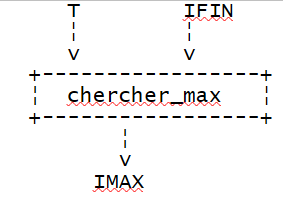

5. Funzioni e procedure
5.1. Le funzioni predefinite di VBScript
La ricchezza di un linguaggio deriva in gran parte dalla sua libreria di funzioni, che possono essere incapsulate in oggetti sotto il nome di metodi. Da questo punto di vista, si può considerare che VBScript sia piuttosto povero.
La tabella seguente elenca le funzioni di VBScript al di fuori degli oggetti. Non le descriveremo in dettaglio. Il loro nome è in genere indicativo della loro funzione. Il lettore potrà consultare la documentazione per ottenere dettagli su una funzione specifica.
Abs | Array | Asc | Atn |
CBool | CByte | CCur | CDate |
CDbl | Chr | CInt | CLng |
Conversioni | Cos | CreateObject | CSng |
Data | DateAdd | DateDiff | DatePart |
DateSerial | DateValue | Giorno | Matematica derivata |
Valutazione | Exp | Filtro | FormatCurrency |
FormatDateTime | FormatNumber | FormatPercent | GetLocale |
GetObject | GetRef | Esadecimale | Ora |
InputBox | InStr | InStrRev | Int, Fisso |
IsArray | IsDate | IsEmpty | IsNull |
IsNumeric | IsObject | Unire | LBound |
LCase | Sinistra | Len | LoadPicture |
Log | LTrim; RTrim; e finiture | Matematica | Mid |
Minuto | Mese | MonthName | MsgBox |
Ora | Ott | Sostituisci | RGB |
A destra | Rnd | Round | ScriptEngine |
ScriptEngineBuildVersion | ScriptEngineMajorVersion | ScriptEngineMinorVersion | Secondo |
SetLocale | Firmato | Sin | Spazio |
Split | Sqr | StrComp | String |
Tan | Ora | Timer | TimeSerial |
TimeValue | TypeName | UBound | UCase |
VarType | Giorno della settimana | WeekdayName | Anno |
5.2. Programmazione modulare
Descrivere la soluzione programmata di un problema significa descrivere la sequenza di azioni elementari eseguibili dal computer e in grado di risolvere il problema. A seconda dei linguaggi, queste operazioni elementari sono più o meno sofisticate. Tra queste si trovano, ad esempio:
- leggere un dato proveniente dalla tastiera o dal disco
- scrivere un dato sullo schermo, su una stampante, su disco, ecc.
- calcolare espressioni
- spostarsi all’interno di un file
- ...
Descrivere un problema complesso può richiedere diverse migliaia di queste istruzioni elementari e anche di più. È quindi molto difficile per la mente umana avere una visione d'insieme di un programma. Di fronte a questa difficoltà di cogliere il problema nella sua interezza, lo si scompone quindi in sotto-problemi più semplici da risolvere. Consideriamo il seguente problema: ordinare un elenco di valori numerici digitati dalla tastiera e visualizzare l’elenco ordinato sullo schermo.
In un primo momento, la soluzione può essere descritta nella forma seguente:
début
lire les valeurs et les mettre dans un tableau T
trier le tableau T
écrire les valeurs triées du tableau T à l'écran
fin
Abbiamo scomposto il problema in 3 sottoproblemi, più semplici da risolvere. La scrittura dell'algoritmo è spesso più formalizzata rispetto alla precedente e l'algoritmo si scriverà piuttosto così:
dove T rappresenta un array. Le operazioni
sono operazioni non elementari che devono a loro volta essere descritte da operazioni elementari. Ciò avviene all’interno dei cosiddetti moduli. Il dato T è chiamato parametro del modulo. Si tratta di un’informazione che il programma chiamante passa al modulo chiamato (parametro di ingresso) o riceve dal modulo chiamato (parametro di uscita). I parametri di un modulo sono quindi le informazioni scambiate tra il programma chiamante e il modulo chiamato.
modulo lire_tableau(T) |  |
modulo trier_tableau(T) |  |
modulo écrire_tableau(T) |  |
Il modulo lire_tableau(T) potrebbe essere descritto come segue:
début
écrire "Tapez la suite de valeurs à trier sous la forme val1 val2 ... : "
lire valeurs
construire tableau T à partir de la chaîne valeurs
fin
Qui abbiamo descritto in modo esauriente il modulo lire_tableau. Infatti, le tre azioni necessarie hanno una traduzione immediata in VBScript. L'ultima richiederà l'uso della funzione split. Se VBScript non disponesse di questa funzione, l'azione 3 dovrebbe a sua volta essere scomposta in azioni elementari aventi un equivalente immediato in VBScript.
Il modulo écrire_tableau(T) potrebbe essere descritto come segue:
début
construire chaîne texte "valeur1,valeur2,...." à partir du tableau T
écrire texte
fin
Il modulo écrire_tableau(T) potrebbe essere descritto come segue (supponendo che gli indici degli elementi di T partano da 0):
début
N<-- indice dernier élément du tableau T
pour IFIN variant de N à 1
faire
//si cerca l'indice IMAX dell'elemento più grande di T
// IFIN è l'indice dell'ultimo elemento di T
chercher_max(T, IFIN, IMAX)
// si scambia l'elemento più grande di T con l'ultimo elemento di T
échanger (T, IMAX, IFIN)
finfaire
FIN
Qui l'algoritmo utilizza nuovamente azioni non elementari:
. chercher_max(T, IFIN, IMAX)
. échanger(T, IMAX, IFIN)
chercher_max(T, IFIN, IMAX) restituisce l'indice IMAX dell'elemento più grande dell'array T, il cui indice dell'ultimo elemento è IFIN.
 |
scambia(T, IMAX, IFIN) scambia due elementi dell'array T, quelli con indice IMAX e IFIN.
 |
È quindi necessario descrivere le nuove operazioni non elementari.
modulo chercher_max(A, IFIN, IMAX) | |
modulo di scambio (T IMAX, IFIN) |
Il problema iniziale è stato descritto in modo esaustivo utilizzando operazioni elementari di VBScript e può quindi ora essere tradotto in questo linguaggio. Si noti che le operazioni elementari possono variare da un linguaggio all’altro e che, pertanto, l’analisi di un problema deve, a un certo punto, tenere conto del linguaggio di programmazione utilizzato. Un oggetto che esiste in un linguaggio potrebbe non esistere in un altro, modificando così l’algoritmo utilizzato. Pertanto, se un linguaggio disponesse di una funzione di ordinamento, sarebbe assurdo non utilizzarla in questo caso.
Il principio qui applicato è quello detto dell’analisi discendente. Se si rappresenta la struttura portante della soluzione, si ottiene quanto segue:
 |
Si tratta di una struttura ad albero.
5.3. Le funzioni e le procedure VBScript
Una volta effettuata l’analisi modulare, il programmatore può tradurre i moduli del proprio algoritmo in VBScript fonctions o procédures. Sia fonctions che procédures accettano parametri di input/output, ma fonction restituisce un risultato che ne consente l’utilizzo nelle espressioni, mentre procédure non lo restituisce.
5.3.1. Dichiarazione di funzioni e procedure VBScript
La dichiarazione di una procedura VBScript è la seguente
e quella di una funzione
Per restituire il proprio risultato, la funzione deve contenere un'istruzione di assegnazione del risultato a una variabile che porta il nome della funzione:
nomeFunzione=risultato
L'esecuzione di una funzione o di una procedura termina in due modi:
- all'incontro con l'istruzione di fine funzione (end function) o di fine procedura (end sub)
- quando si incontra l'istruzione di uscita dalla funzione (exit function) o dalla procedura (exit sub)
Per la funzione, si ricordi che il risultato deve essere stato assegnato a una variabile che porta il nome della funzione prima che questa termini con un end function o un exit function.
5.3.2. Modalità di passaggio dei parametri di una funzione o procedura
Nella dichiarazione dei parametri di ingresso-uscita di una funzione o procedura, si specifica la modalità (byRef, byVal) di trasmissione del parametro dal programma chiamante al programma chiamato:
sub nomProcédure([Byref/Byval] param1, [Byref/Byval] param2, ...)
function nomFonction([Byref/Byval] param1, [Byref/Byval] param2, ...)
Quando non viene specificata la modalità di trasmissione byRef o byVal, viene utilizzata la modalità byRef.
Parametri effettivi, parametri formali
Sia una funzione VBScript definita da
I parametri parmamFormi utilizzati nella definizione della funzione o della procedura sono chiamati parametri formali. La funzione precedente potrà essere utilizzata dal programma principale o da un altro modulo tramite un'istruzione del tipo:
I parametri parmamEffi utilizzati nella chiamata alla funzione o alla procedura sono denominati parametri effettivi. Quando ha inizio l'esecuzione della funzione nomFonction, i parametri formali ricevono i valori dei corrispondenti parametri effettivi. Le parole chiave byRef e byVal definiscono la modalità di trasmissione di questi valori.
Modalità di trasmissione per valore (byVal)
Quando un parametro formale specifica questa modalità di trasmissione, il parametro formale e il parametro effettivo sono due variabili distinte. Il valore del parametro effettivo viene copiato nel parametro formale prima dell’esecuzione della funzione o della procedura. Se quest’ultima modifica il valore del parametro formale durante la sua esecuzione, ciò non modifica in alcun modo il valore del parametro effettivo corrispondente. Questa modalità di trasmissione è particolarmente adatta ai parametri di ingresso della funzione o della procedura.
 |
Modalità di trasmissione per riferimento (byRef)
Questa modalità di trasmissione è quella predefinita se non viene specificata alcuna modalità di trasmissione del parametro. Quando un parametro formale specifica questa modalità di trasmissione, il parametro formale e il parametro effettivo corrispondente costituiscono un’unica e stessa variabile. Pertanto, se la funzione modifica il parametro formale, anche il parametro effettivo viene modificato. Questa modalità di trasmissione è particolarmente adatta:
- ai parametri di uscita, poiché il loro valore deve essere trasmesso al programma chiamante
- ai parametri di input che richiedono molto tempo per essere ricopiati, come gli array
 |
Il programma seguente mostra alcuni esempi di passaggio di parametri:
Programma |
|
Risultati |
Commenti
- In uno script VBScript non esiste una posizione specifica per le funzioni e le procedure. Possono essere inserite in qualsiasi punto del testo sorgente. In genere, vengono raggruppate all'inizio o alla fine e si fa in modo che il programma principale costituisca un blocco continuo.
5.3.3. Sintassi di chiamata delle funzioni e delle procedure
Sia data una procedura p che accetta i parametri formali pf1, pf2, ...
- la chiamata alla procedura p avviene nella forma
senza parentesi attorno ai parametri
- se la procedura p non accetta alcun parametro, è possibile utilizzare indifferentemente la chiamata p o p() e la dichiarazione sub p o sub p()
Sia una funzione f che accetta parametri formali pf1, pf2, ...
- la chiamata alla funzione f avviene nella forma
Le parentesi attorno ai parametri sono obbligatorie. Se la funzione f non accetta alcun parametro, è possibile utilizzare indifferentemente la chiamata f o f() e la dichiarazione function f o function f().
- Il risultato della funzione f può essere ignorato dal programma chiamante. La funzione f viene quindi considerata come una procedura e segue le regole di chiamata delle procedure. Si scrive quindi f pe1, pe2, ... (senza parentesi) per chiamare la funzione f.
Se la funzione o la procedura è un metodo di oggetto, sembrerebbe che le regole siano leggermente diverse e non omogenee.
- Pertanto, è possibile scrivere MyFile.WriteLine "Questo è un test." oppure MyFile.WriteLine("Questo è un test.")
- ma se è possibile scrivere wscript.echo 4, non è possibile scrivere wscript.echo(4).
Ci atterremo alle seguenti regole:
- niente parentesi attorno ai parametri di una procedura o di una funzione utilizzata come procedura
- parentesi attorno ai parametri di una funzione
5.3.4. Alcuni esempi di funzioni
Di seguito sono riportati alcuni esempi di definizioni e utilizzi delle funzioni:
Programma |
|
Risultati |
Commenti
- La funzione rendUnTableau dimostra che una funzione può restituire più risultati anziché uno solo. È sufficiente che li inserisca in una variabile di tipo tabella e che restituisca tale variabile come risultato.
- Al contrario, la funzione argumentsVariables dimostra che è possibile scrivere una funzione che accetta un numero variabile di argomenti. Anche in questo caso è sufficiente inserirli in un variante tabella e rendere tale variante un parametro della funzione.
5.3.5. Parametro di uscita o risultato di una funzione
Supponiamo che l’analisi di un’applicazione abbia evidenziato la necessità di un modulo M con parametri di ingresso Ei e parametri di uscita Sj. Ricordiamo che i parametri di ingresso sono informazioni che il programma chiamante fornisce al programma chiamato e che, al contrario, i parametri di uscita sono informazioni che il programma chiamato fornisce al programma chiamante. In VBScript esistono diverse soluzioni per i parametri di uscita:
- se c’è un solo parametro di uscita, lo si può definire come risultato di una funzione. In tal caso non si ha più un parametro di uscita, ma semplicemente un risultato di funzione.
- se ci sono n parametri di uscita, uno di essi può fungere da risultato della funzione, mentre gli altri n-1 rimangono parametri di uscita. È anche possibile non utilizzare una funzione, ma una procedura con n parametri di uscita. Si può inoltre utilizzare una funzione che restituisca un array in cui sono stati inseriti i n valori da restituire al programma chiamante. Si ricordi che il programma chiamato restituisce i propri risultati al programma chiamante tramite copia dei valori. Tale copia viene evitata nel caso di parametri di uscita passati per riferimento. In quest’ultima soluzione si ottiene quindi un risparmio di tempo.
5.4. Il programma VBScript per l’ordinamento dei valori
Avevamo iniziato la discussione sulla programmazione modulare con lo studio algoritmico di un ordinamento di valori numerici digitati dalla tastiera. Ecco la traduzione VBScript che se ne potrebbe fare:
Commenti:
- il modulo échanger, che era stato identificato nell'algoritmo iniziale, non è stato qui oggetto di un modulo in VBScript poiché ritenuto troppo semplice per essere oggetto di un modulo specifico.
5.5. Il programma IMPOTS in forma modulare
Riprendiamo il programma di calcolo delle imposte, questa volta scritto in forma modulare
Commenti
- La funzione getArguments consente di recuperare le informazioni (coniuge, figli, stipendio) del contribuente. In questo caso, tali informazioni vengono passate come argomenti al programma VBScript. Se ciò dovesse cambiare, ad esempio se questi argomenti provenissero da un'interfaccia grafica, sarebbe necessario riscrivere solo la procedura getArguments e non le altre.
- La funzione getArguments è in grado di rilevare errori negli argomenti. Quando ciò si verifica, si sarebbe potuto decidere di interrompere l’esecuzione del programma all’interno della funzione getArguments tramite un’istruzione wscript.quit. Ciò non deve mai essere fatto all’interno di una funzione o di una procedura. Se una funzione o una procedura rileva un errore, deve segnalarlo in un modo o nell’altro al programma chiamante. Spetta a quest’ultimo decidere se interrompere o meno l’esecuzione, non alla procedura. Nel nostro esempio, il programma chiamante potrebbe decidere di chiedere nuovamente all’utente di reinserire il dato errato dalla tastiera piuttosto che interrompere l’esecuzione.
- In questo caso, la funzione getArguments restituisce un array in cui il primo elemento è un codice di errore (0 se non ci sono errori) e il secondo è un messaggio di errore, qualora si sia verificato un errore. Verificando il risultato ottenuto, il programma chiamante può stabilire se si è verificato o meno un errore.
- La procedura getData consente di ottenere i dati necessari per il calcolo dell’imposta. In questo caso, tali dati sono definiti direttamente nella procedura getData. Se questi dati dovessero provenire da un’altra fonte, ad esempio da un file o da un database, sarebbe necessario riscrivere solo la procedura getData e non le altre.
- La funzione calculerImpot consente di calcolare l’imposta una volta ottenuti tutti i dati, indipendentemente dal modo in cui sono stati acquisiti.
- Si noti quindi che una scrittura modulare consente il (ri)utilizzo di determinati moduli in contesti diversi. Questo concetto è stato fortemente sviluppato negli ultimi vent’anni nell’ambito della programmazione orientata agli oggetti.